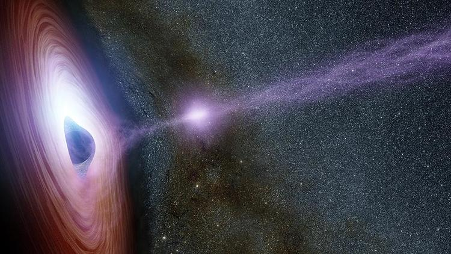

IF BLACK HOLES ARE
BLACK, HOW DO SCIENTISTS KNOW THEY ARE THERE?
- Strong gravity in black holes pulls all of the light into
the middle of the black hole.Therefore a black hole can not be seen.
However scientist can know how the storng gravity affects the
stars and gas around the black holes. Scientists can study stars
to find out if they are flying around, or orbiting,
a black hole.High-energy light is made when a balck hole
and a star are close together.This kind of light could not
be noticed with human eyes.Accordingly, scientists use
satellites and telescopes in space to see the
high-energy light.
|

When black hole swallows the stars
|